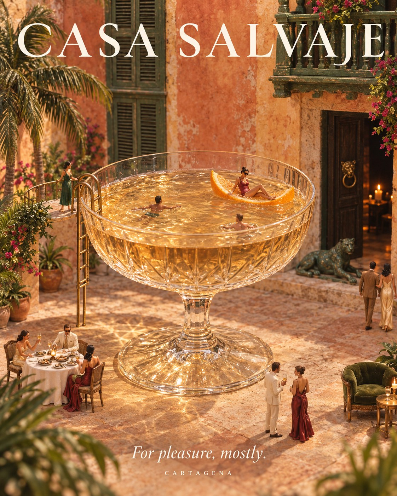

Temporada alta en Cartagena: Navidad, Año Nuevo y Semana Santa
Diciembre, enero y Semana Santa son las fechas en que Cartagena se llena. Así se planean.
Read in English →
De mediados de diciembre a mediados de enero, y otra vez en Semana Santa, Cartagena recibe a medio país y a muchos viajeros de fuera. La ciudad se llena de energía, y también de gente: planear con tiempo marca la diferencia.
Navidad
El Centro Histórico se ilumina y las plazas se llenan desde temprano. El 25 de diciembre de 2026 cae viernes, así que el fin de semana de Navidad es largo.
Año Nuevo
El 1 de enero de 2027 también cae viernes. La última noche del año es la más pedida en toda la ciudad: si quieres cenar en Casa Salvaje, entra a la lista de invitados para enterarte primero de los planes de fin de año.
Semana Santa 2027
El Jueves y el Viernes Santo son el 25 y el 26 de marzo de 2027. Es otra de las semanas más llenas en Cartagena.
Consejos para la temporada alta
- Reserva todo antes: vuelos, hotel y mesas.
- Muévete a pie por el Centro: es más rápido que cualquier carro.
- Ten en cuenta los festivos en el calendario de puentes.
- Fechas especiales: los horarios pueden cambiar; confirma por WhatsApp y revisa los horarios.